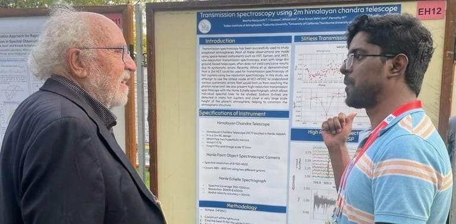
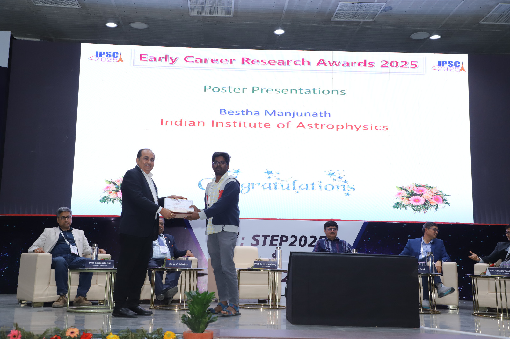
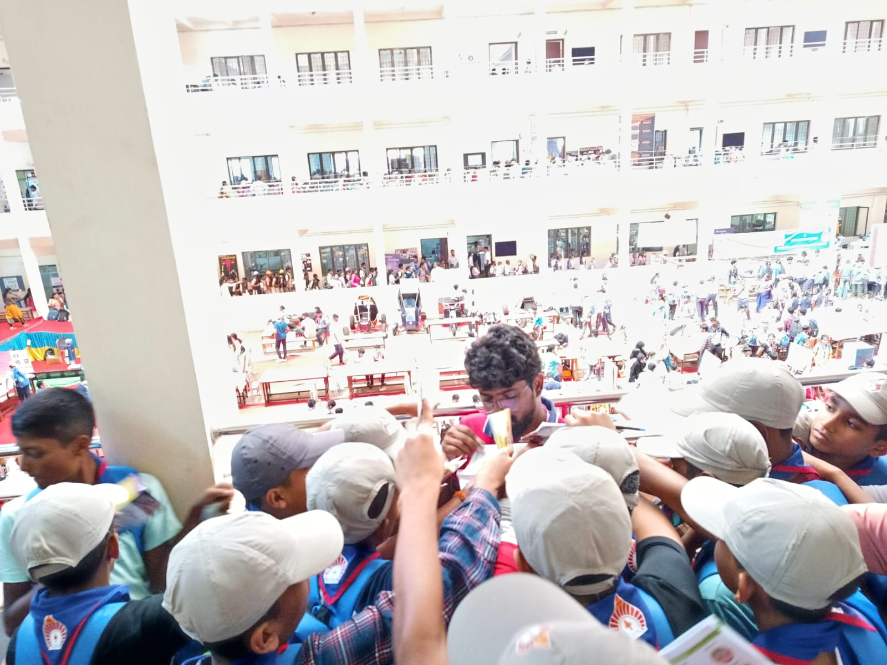
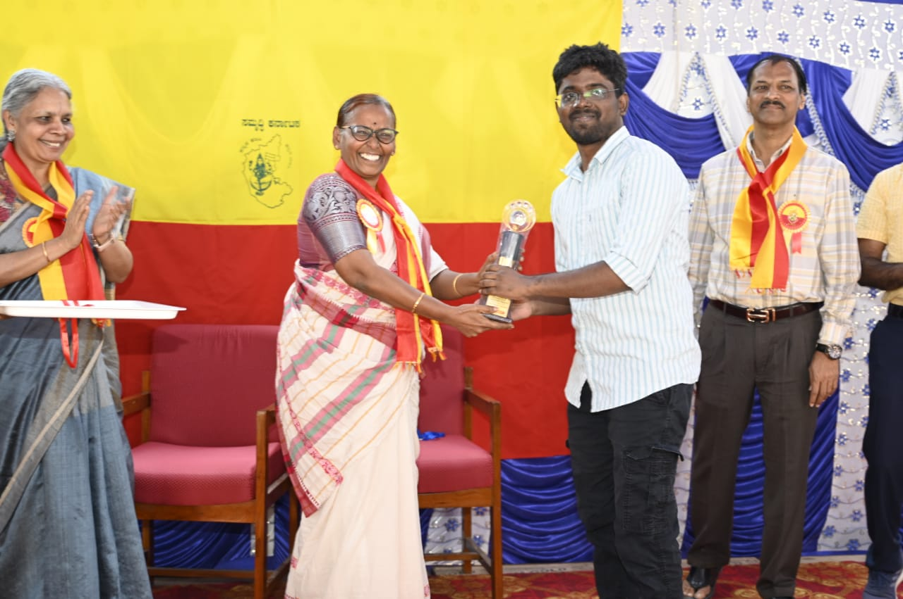

A collection of moments, places, observations, conferences, travels, and experiences that have shaped my journey.

Click to ExpandA Memorable Scientific Moment
Interacting with Prof. Michel Mayor, Nobel Laureate and co-discoverer of the first exoplanet orbiting a Sun-like star, during a conference at the Physical Research Laboratory (PRL), Ahmedabad.
I presented my first observed transit light curve of WASP-33b and discussed my work on exoplanet transmission spectroscopy, receiving the Best Poster Award at the conference.

Click to ExpandEarly Career Research Award
Receiving the Early Career Research Award at the 6th Indian Planetary Science Conference (IPSC 2025) and the S2-STEP 2025 conference at IIT Roorkee.
The award recognized my presentation on Atmospheric dispersion measurements at the Hanle site, characterizing dispersion for precision ground-based spectroscopy.

Click to ExpandConnecting Astronomy with Young Minds
Interacting with school students as part of a science outreach program in Mudbidri, Karnataka.
One of the most rewarding parts of being a researcher is having the opportunity to share the excitement of science and astronomy with curious young minds.

Click to ExpandIIA Chess Championship
A memorable moment from the IIA Chess Championship 2025, receiving the championship trophy from my PhD supervisor, Prof. Sivarani Thirupathi.
Chess has been one of my favorite pursuits outside of research, and winning the institute championship was a particularly special milestone.